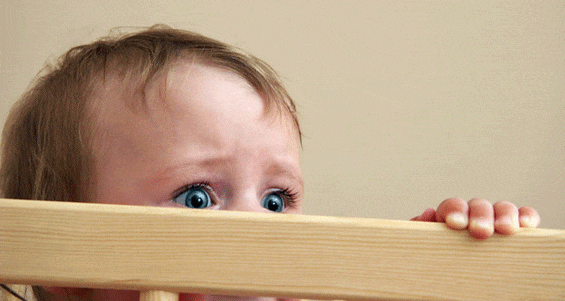

Основные причины две:
• нарушение главного правила детского сна – чистая прохладная детская комната. Пересыхают слизистые оболочки, причины понятны (тепло, сухо, обогреватели, ковры, пыль);
• в связи с некоторыми хроническими болезнями носоглотки (типичный пример – аденоиды) нарушено носовое дыхание, соответственно – пересыхает во рту.
Если вовремя не изменить физические параметры, т. е. не создать оптимальный режим влажности и температуры детской комнаты или не оказать лечебную помощь при болезнях, «ночное питье» закрепляется в виде рефлекса.
В народных массах нет расхождений при ответе на вопрос о причине этого явления. Абсолютно всем хорошо известно: «коль дитя скрипит зубами – значит, мается глистами». Сие положение не находит, однако, подтверждения. У скрипящих зубами глисты, конечно, встречаются, но не чаще, чем у других, зубами не скрипящих. Ни врачи, ни ученые-физиологи, много лет изучающие сон, не знают, из-за чего это происходят, но в одном убеждены точно – это не болезнь, это со временем проходит, хотя два отрицательных момента есть: не слишком приятно с эстетический точки зрения и вполне реальная возможность повреждения зубов.
Существует теория, согласно которой причина скрежетания во сне зубами – рудиментарный (т. е. недоразвитый, остаточный) рефлекс, аналогичный рефлексам животных, которые таким образом точат себе зубы.
Это весьма неприятное явление имеет место у 10 % детей. Существуют десятки способов фармакологической и психотерапевтической коррекции этого явления. Ни один из этих способов не является абсолютно эффективным, хотя отдельные методики у отдельных детей приводят к прекрасным результатам. Врачам причины энуреза до сих пор не известны. Предполагают, что в созревающем мозге иногда формируется особый очаг, который в определенной фазе сна запускает рефлекс опорожнения мочевого пузыря. Поскольку речь идет именно о созревающем мозге, энурез рано или поздно прекращается.
Наиболее часто имеют место в возрасте трех-восьми лет и в периоде полового созревания. Особой опасности не представляют, но их частота и выраженность во многом зависят от психологической атмосферы в семье и от элементарного здравого смысла родителей. Страшные сказочки перед сном, телевизионные ужастики, рассказы про деда Бабая и про непослушного мальчика, которого утащил злой пес Барбос… Индивидуальная детская комната увеличивает вероятность ночных страхов – вместе с родителями спать поспокойнее.
В то же время страхи на этапе отхода ко сну (боязнь темноты, тишины, шума ветра за окном) требуют уважительного к себе отношения. Ни в коем случае не высмеивать, может быть, и посидеть рядышком, пока не уснет.

Важнейшим правилом, регламентирующим отношение родителей к любым детским ночным проблемам, является максимально возможная доброжелательность.
Что бы ни делал ребенок во сне – скрипел зубами, мочился в постель, ходил, разговаривал, храпел-сопел, – он этого не делал. Это был не он, думающая часть детских мозгов не имела никакого отношения ко всем вышеописанным процессам. Еще раз напомню: самые-пресамые специалисты до сих пор не могут понять, что такое сон и для чего надо спать. Все во сне происходящее во многом остается тайной за семью печатями, и ругать ребенка за мокрую постель, по меньшей мере, неразумно.
Сон ребенка любого возраста является одним из важнейших критериев состояния его здоровья.
Любые существенные отклонения от режима сна – внезапное пробуждение в необычное время и особенно (!) желание спать в необычное время – являются весьма тревожным признаком и требуют особой бдительности со стороны родителей: измерить температуру тела, порасспрашивать (болит – не болит), лишний раз проснуться ночью – посмотреть, потрогать лобик.
Следует помнить, что сонливость – типичное проявление высокой температуры тела и критического дефицита жидкости в организме.
Если врачебные назначения не могут быть выполнены из-за сонливости (не пьет жидкость, не хочет глотать лекарства) – это однозначное показание к немедленной госпитализации.
Во время любой болезни, но особенно при острых респираторных заболеваниях, первостепенное внимание должно уделяться детской комнате. Факторы, рассматриваемые нами в качестве желательных для ребенка здорового, становятся обязательными при развитии болезней.
Любая респираторная вирусная инфекция сопровождается повышенным образованием слизи на всем протяжении дыхательных путей – от слизистой оболочки носа до бронхов. Высыхание этой слизи – важнейший фактор риска, многократно повышающий риск бактериальных осложнений. Скопление и высыхание слизи во время сна – более вероятно (в комнате душно, ребенок не двигается и не пьет). Отсюда – обязательное условие сна больного ребенка: теплая одежда, но чистый, прохладный и влажный воздух. В течение дня многократная влажная уборка.
Некоторые, хотя и вполне очевидные моменты, касаются ночных действий родителей при детских болезнях: не закрывать дверь в детскую комнату, быть рядом, напоить, переодеть, успокоить, лишний раз измерить температуру.
В целом режим сна больного ребенка может меняться самым существенным образом – смещаются привычные часы сна, изменяется (как правило, удлиняется) их продолжительность. Это вполне естественно, но важнее другое – восстановление обычного режима сна является убедительным признаком выздоровления.
Е.О.Комаровский. "Здоровье ребенка"